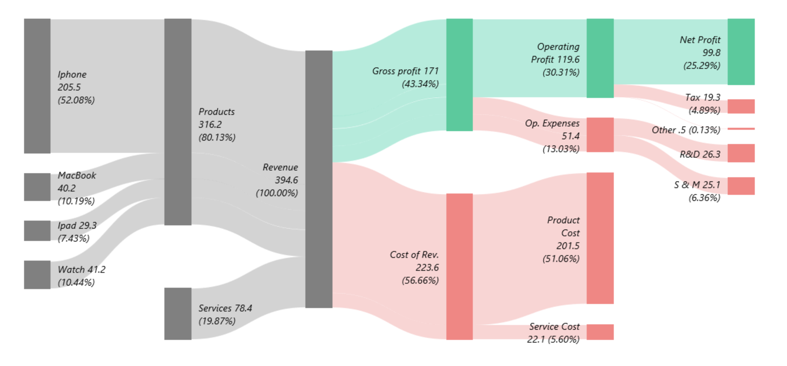

A little trust goes a long way
As a senior technical person, you will have certain professional authority.
But to be effective, you need to build personal trust with your team and peers.
That can happen only if you are approachable & transparent.
Set up 1:1 meetings with your team members and cross-functional team leads.
Go on a listening tour and take your notes.
Be specific on how people can reach you and how you will communicate with them.
Setup routine 1:1 meetings if required.
Follow the money
It is important to have high level overview of the business.
This will help you make informed decisions and prioritize your work effectively.

Sankey chart of Apple's revenue
If the company is public, you can get quarterly & annual reports.
If not, try to get a good sense of where the money is coming from and where the money is going.
Follow the data
Get a high level overview of product(s), infrastructure, tools, data flow.
This is crucial to make informed technical decisions or architectural changes.
Start Small
For the first 30 days, you should be in "listening mode" or "absorbing mode".
Try to understand the company, the team, the product, the customers, the culture, and the processes.
It is better to avoid any big changes in the first 30 days. There will be plenty of time for that later.
30-60-90 Day Plan
Note down action items for next 60 and 90 days.
It could be anything from setting up a new monitoring system,
to improving the deployment process, to hiring new team members, providing simple tools for self service, etc.
Commnicate the plan with all stakeholders and avoid any surprises.
Reduce Cloud & SaaS Costs
If these are a significant part of the company's expenses,
then review the costs and see if there is any room for reducing these costs.
On cloud, moving compute instances to reserved or spot can save 70-90% of costs.
That can have a big impact on the company's bottom line.
Buy or build good tools
On the other hand, if there are any tools that can help the team to be more productive,
then it is worth investing in those tools.
To do that, you should already have a good toolset under your belt.
Sometimes building a simple tool which can make team self sufficient
can have a big impact on the team's productivity and morale.
Conclusion
The first 30 days in a senior technical role are crucial for building trust,
understanding the business, and setting the foundation for the next step.
Without much work to do, you can have a big impact on the company by following the tips mentioned above.